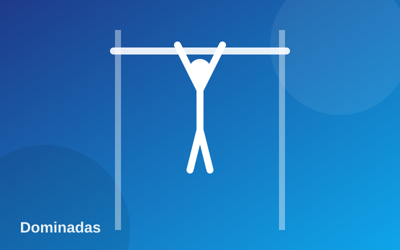
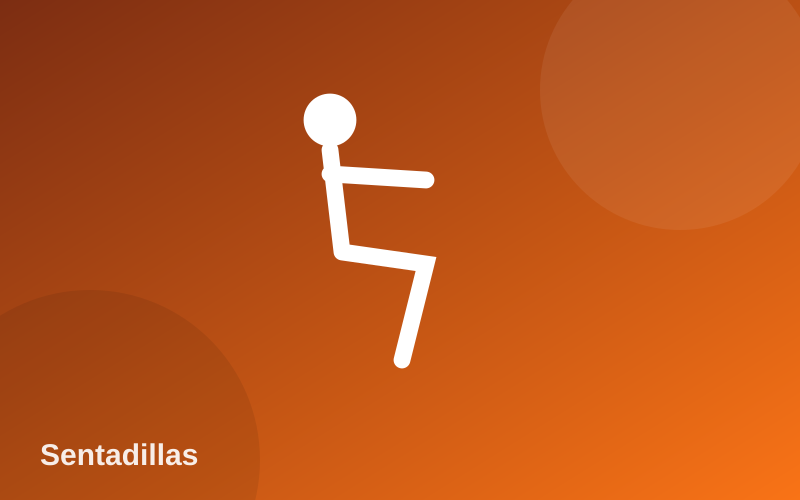
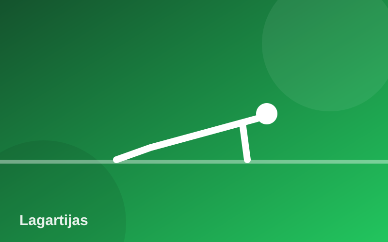

Entrenamientos de calistenia
Tres ejercicios base para construir fuerza usando solo tu peso corporal.
La calistenia es un método de entrenamiento que utiliza el propio peso corporal como resistencia. No necesitas máquinas costosas: con una barra, el piso y constancia puedes desarrollar fuerza, control y resistencia en todo el cuerpo.
El secreto está en la progresión. Cada ejercicio tiene variantes más sencillas y más difíciles, así que puedes empezar donde estés hoy y avanzar poco a poco aumentando repeticiones, series o la dificultad del movimiento.
A continuación encontrarás los tres movimientos fundamentales de nuestro programa, con su nivel de dificultad y una guía rápida de técnica para evitar lesiones.

Dominadas Avanzado
Trabajan espalda, bíceps y agarre. Empieza con dominadas negativas o con banda.

Sentadillas Principiante
Fortalecen piernas y glúteos. Mantén la espalda recta y las rodillas alineadas.

Lagartijas Intermedio
Desarrollan pecho, hombros y tríceps. Cuerpo en línea recta de cabeza a talones.